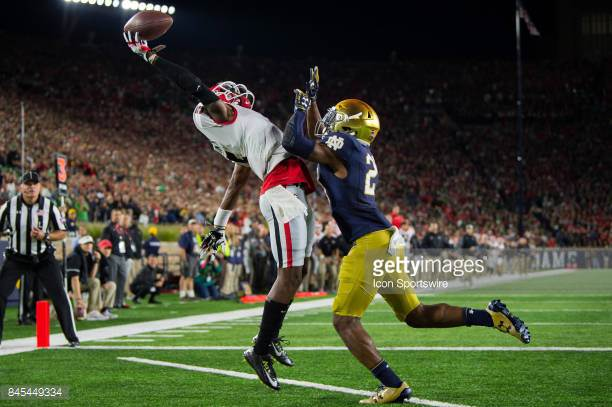
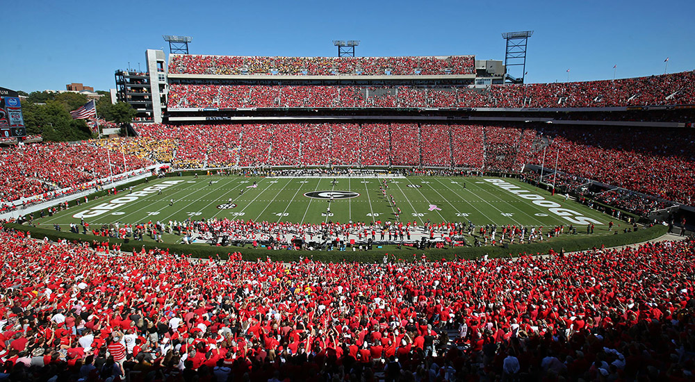

The Georgia Bulldogs are way ahead of schedule. Kirby Smart in his second year as a head coach has led the Bulldogs to a 7-0 start and a #2 ranking in both the AP and Coaches poll. UGA is not just winning games, but they are dominating their opponents and have opened the eyes of teams all around the country.
| Rushing Offense | Rushing Defense | Passing Offense | Passing Defense |
|---|---|---|---|
| 10th | 6th | 112th | 3rd |
| Overall Offense | Overall Defense | ||
| 31st | 3rd |
Kirby Smart in his 2nd year already has his football team playing the style of football he wants, running the ball on offesnse and dominanting teams with their defense. The offense started off slow when compared to the defense, but now the Bulldogs are running over teams and slowly putting together one of the most consistent passing attacks in the country. The defense is led by one of the best front 7's in football and a secondary that is now becoming a lockdown unit. With Georgia dominating on both sides of the ball while only getting better, there are no signs that the team is going to slow down anytime soon.
Two of the biggest moments this year for the Georgia Bulldogs have been touchdown catches. The first catch was against Notre Dame and it was caught by Junior Terry Godwin.

Image Credit: Getty Images
The next catch came from Senior Javon Wims. This catch by wims was significant because UGA usually struggles with the Florida Gators, but this year they went to Jacksonville with a point to prove and a message to send. With this catch they accomplished both of those goals and the Dawgs dominated the Gators, winning by 35.
With all of these catches and how dominant UGA has been the College Football Playoff Comittee felt that
the team has proved themselves to be the #1 team in the country.
UGA held their highest ranking in the CFP Rankings since its introduction in 2014.
Advanced statistics this year highlight how good UGA has been. The Dawgs are top ten in the country in these categories:
